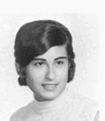

Draft for review by Linda Sinapi. Not yet published on the class site.
This biography was compiled from yearbooks, reunion records, and publicly available sources as part of our effort to preserve the history of the CHSE Class of 1971. We do not publish private contact information. Please contact us to correct, update, or remove information about yourself.
Compiled October 2026

Linda Sinapi grew up in Cranston, a daughter of Oresto J. Sinapi, a lithographer at JC Hall Printing and a World War II Army veteran, and Adelina “Dora” (Tortorella) Sinapi, both of Cranston.
At Cranston East Linda was editor-in-chief of the Cranstonian, the school yearbook, as a senior, when she also sat on the Student Council. She belonged to the National Honor Society as a junior and senior and worked on Charisma as a junior. She took part in the German Club for three years, the Hockey Club as a junior and senior, and the Italian Club as a sophomore, and she was a tutor as a sophomore.
Linda went on to a career in social work. Her professional profile lists a first year of casework at Columbia University in 1978–79 and a master of social work from the University of Connecticut in 1980. She worked as an adult medical social worker at the UConn Burgdorf Clinic from May 1980 to September 1981. The profile then lists her as director of behavioral health at Asylum Hill Family Medicine, part of St. Francis Hospital in Hartford, Connecticut, beginning in October 1981, with work teaching family-medicine residents and supervising clinical staff. She is listed as a licensed clinical social worker in Connecticut, and in 2026 a gift to the Society of Teachers of Family Medicine Foundation was made “in honor of Linda Sinapi, LCSW.”
Linda has lived in western Massachusetts since 1986. In a talk the Jewish Community of Amherst published in 2014, when she was called to the Torah with its adult B’nai Mitzvah class on June 7, 2014, she wrote that she had “worked at the same job for over thirty years” and that “I have spent my life creating safety, a home, and community.” In the same talk she wrote that when she chose to become a Jew, “the central reason was tikkun olam,” which she described as “repair of the world.” She also wrote that “The JCA has become an important part of my life since my conversion in 1992.”
Her father’s 2016 obituary lists her spouse, Cate Carulli, of South Deerfield, Massachusetts. The Greenfield Recorder describes Cate as an early staff member and founder of the Resilience Center of Franklin County, and photographs in its October 2025 story on the center’s 50th anniversary are credited to Linda. Recent records place Linda in the Sunderland area.
Linda came to the class’s 50th reunion at the Bonnet Shores Beach Club in Narragansett on June 25, 2022, and appears in the reunion photo gallery with classmate Gene Blair.